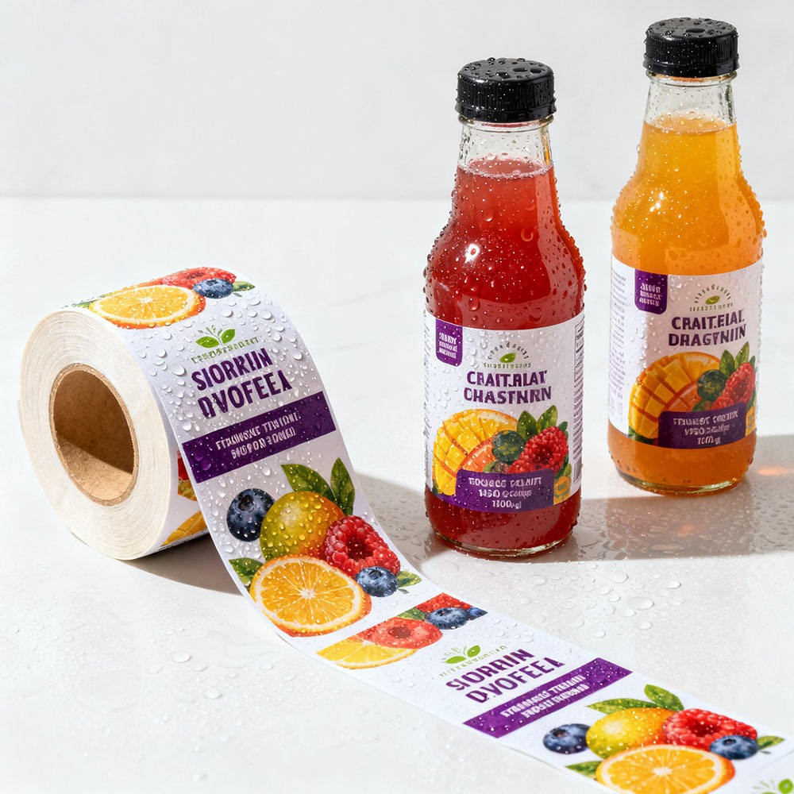
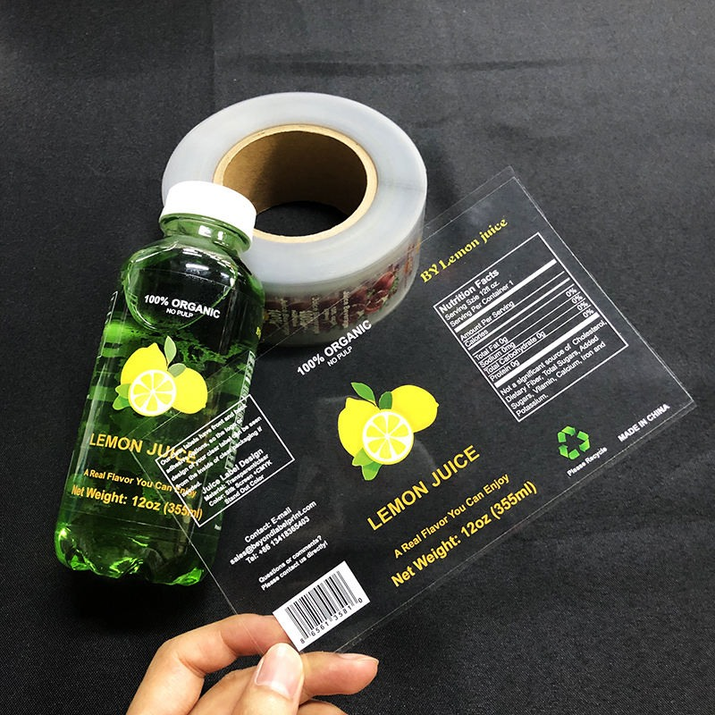
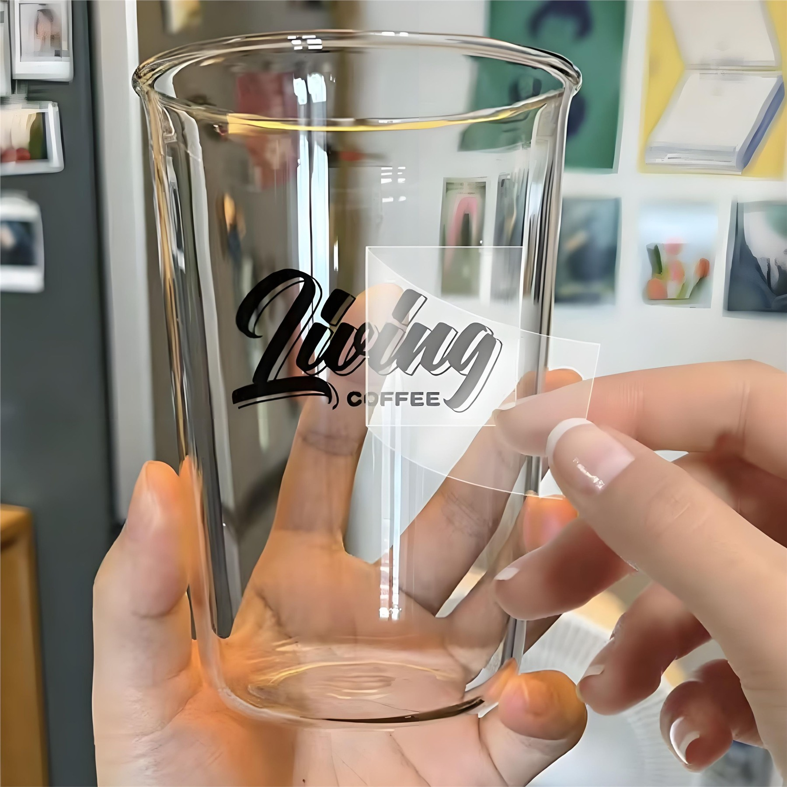
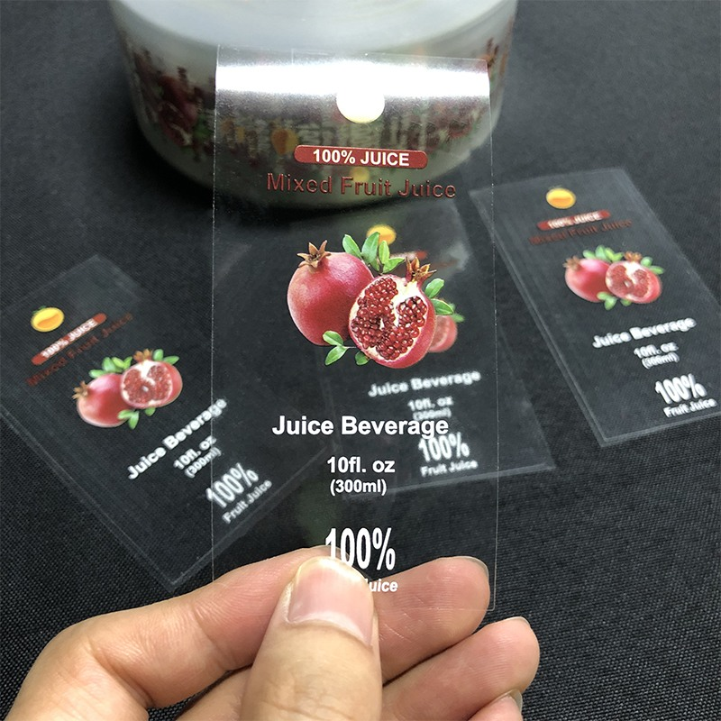

A beverage label is not just decoration. It has to fit the bottle curve, survive moisture, keep color clean and leave enough room for the brand, flavor, net content, barcode, ingredient panel or QR code. For small beverage brands, getting these details right early can save a lot of back-and-forth.

Start with the bottle or cup type
A label for a slim water bottle is different from a label for a short juice bottle, a coffee cup, a can or a tumbler. Send a bottle photo, diameter, height and target label size if you have it. If you are not sure, RP can suggest a workable label size before proofing.
Information to prepare before asking for a quote
- Bottle, cup, can or package type
- Label width and height, or bottle dimensions if unsure
- Quantity, starting from 100 pcs
- Material request: waterproof BOPP, PET, clear film or UV DTF transfer film
- Finish: matte, glossy, clear, metallic effect, roll format or sheet format
- Artwork, logo, reference image or design idea
- Use condition: room temperature, cold storage, ice bucket, delivery or retail shelf
Waterproof does not mean one material fits every drink
Waterproof BOPP is a practical default for many bottle labels. PET film is strong and smooth when the label needs better durability. Clear film is useful when the buyer wants a no-label look on transparent bottles. For cups and tumblers, UV DTF transfers can create a direct decoration effect without a traditional label edge.


Check roll direction before bulk production
If labels will be applied by hand, roll direction is flexible. If labels will be applied by machine, roll direction, gap, core size and unwind direction should be confirmed before production. This is a small detail, but it matters for packing speed.
Use proofing to catch layout problems early
A free digital proof helps check label size, fruit image placement, readable text, barcode area, nutrition panel, color direction and whether the label feels balanced on the bottle. If the buyer has no finished artwork, a bottle photo plus logo and reference style is enough to start.

Fast custom beverage label path
Send bottle type, size, quantity, material request and artwork or reference image. RP prepares a free design suggestion and digital proof before production. MOQ starts from 100 pcs. Sample lead time is usually 1-2 days, and bulk production is usually 10-12 days after confirmation.
Quote Waterproof Beverage LabelsCommon buyer questions
Which material should I choose for cold drink labels?
Waterproof BOPP, PET or moisture-resistant film is usually recommended for cold bottles and drink packaging that may face condensation.
Can you make clear beverage labels?
Yes. Clear label material is available for transparent bottles, glass bottles and clean no-label packaging effects.
Can you help with label design?
Yes. Send your logo, bottle photo, label size and reference style. RP can prepare a free design suggestion and digital proof before production.